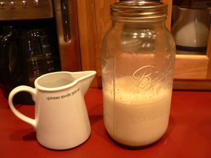

Raw milk party

Mom is cooking up a full Thanksgiving post that will go up sometime in the next few days, but in the meantime I wanted to report about a wonderful new, regular product in my grandmother’s refrigerator: raw milk. She managed to buy a share of a cow from some Maryland Mennonites, and every week she picks up 1.5 gallons of milk in Mason jars from her cow along with other fresh products. (These same Mennonites provided us with two freshly slaughtered turkeys for our Thanksgiving dinner, which were beautiful and delicious.) Nina Planck swears by the nutritional benefits of raw milk, and my grandfather, whose body cannot tolerate lactose, is happy to finally be able to enjoy a glass of cold milk poured over his leftover apple pie the morning after Thanksgiving. Enzymes he needs to digest lactose are destroyed by pasteurization. The state of Maryland may eventually make her arrangement with the Mennonites illegal, but in the meantime, it’s a raw milk party every day here in rural Keedysville, and everyone is happy.
Raw milk looks, smells, and tastes different and better than any milk I’ve ever had. It’s yellowish and grassy, and it tastes sweet and delicate. Of course it’s risky, and maybe you have a higher chance of being exposed to different pathogens when you drink it (compared to pasteurized milk). But you will also be exposed to healthful bacteria that are destroyed in processed milk, and to not have the choice is infuriating. My mother and her siblings all grew up on it in the fifties and sixties, and none of them ever had a problem.
Considering all the other products we can freely buy in varying degrees of healthfulness (cigarettes, alcohol, guns, candy), I find it bizarre that we can’t make a choice about dairy products. Put a warning label on it, and let us take the risk. I’d like to at least be able to make an arrangement similar to my grandmother’s with a farm in New Jersey or New York. Have any readers accomplished this? Does anyone know of a farmer who would be willing to break this ridiculous law? Is there a source in the city that I don’t know about?
Comments
the real milk website has listings of places to obtain it:
http://realmilk.com/where1.html
Great post. I’ve never had raw milk, I don’t think. I’ll be checking out that realmilk website now… Hope you had a great Thanksgiving!
You say raw milk is risky. I’m not sure where you got this information, but in the US there have been more cases of foodborne illness per gallon of pasteurized milk than from unpasteurized milk. Some cases are listed at http://www.realmilk.com/foodborne.html.
Keith: I’m saying that all milk is risky, and that we should have the choice of what we drink. I could be wrong, but it seems that, under perfectly clean conditions, raw milk might have a slightly higher chance of having something undesirable in it than pasteurized milk. I think this is the thinking behind the pasteurization laws, anyway. In practice, I bet that pasteurization leads to less stringent quality control, and this is certainly a greater risk to public health.
At the moment, raw milk is monitored closely enough to eliminate risk to the small group of people lucky enough to have access to it. The Mennonite farmers in Maryland say that their facilities are checked to a painful degree, and that it would be nearly impossible for anything harmful to make its way into the milk that they distribute. If it were produced and distributed on the scale of pasteurized milk, it would be a different story, and small farms would be put out of business by the big guys, who can afford high-tech facilities. All I want is for the American milk-drinker to have the right to buy the milk he wants to drink. I don’t care if Gristedes is carrying it, but I would like to see it at the markets.
I’d start by seeing if any of the Weston A. Price Foundation chapters can point you to a source: http://www.westonaprice.org/localchapters/locallist.html
Good luck!
Great, interesting post! Fred’s dad was just telling us about how his grandparents used to pour a half-cup of boiled raw milk into their coffee, among other stuff. I wanted to try and find some raw milk, or something close to it, and try their recipe. I’m going to have to check out the sources others listed.
For sources, go to www.rawmilk.com and click on your state for farms that produce raw milk. Great post, by the way – Hey, I’ve been meaning to try it myself, raw milk has to be better for me than all of the processed food that I eat…plus I could make some great biscuits with it, right?
Organic Pastures has made it very simple for you to write to the lawmakers,
just click on this link and go to the links. They even give you sample
letters to copy and
paste.
http://www.organicpastures.com/contact_lawmakers.html
Even if you are not in CA, please support us in trying to keep raw milk legal:
http://www.localforage.com/local_forage/2007/10/government-snea.html
Government Sneak Attack on California Raw Milk
No more raw milk after January 2008!
Come fight for your right to eat whole, unprocessed foods and raw milk
Eight words are threatening to change your life:
October 25, 2007
Government Sneak Attack on CA Raw Milk
This just in from Mark McAfee of Organic Pastures raw dairy outside of
Fresno…
The state of California has perpetrated yet another disturbing assault on
our rights to consume whole foods. Call your representative in the
California state assembly and senate, the governor, and the Secretary of
Agriculture to make sure your voice is heard.
We are having a hard time finding grass feed or raw milk.
We live in Jacksonville Florida. Could you help us.
Thanks,
Jerry Beauchamp
to Jerry B.
I run a buying club that gets raw milk in the Jacksonville area. email us at jaxfreshfoods@aol.com
My children grew up in the 60’s and 70’s. We were lucky to have a local farm near by. After the farm closed we could not find another and had to buy store milk. My children developed allergies that includes milk intollerence. That told me it is not good to mess with Mother Nature. If cleanliness is # 1 with all our food, we have nothing to worry about. My opinion is: cleanliness is next to godliness. God gave us perfect food, why would men try to improve it, beats the heck out of me. Now I found another raw milk farm and it taste so good and I am glad.
Can someone please help me thank you
Just heard about raw milk is better for us.
I am in Glassboro N.J Where can I get raw milk? thank you
Part of why we don’t get a choice, is that a whole lot of people all the way down the chain benefit from us not having a choice in the matter. Dairy is a big money maker, why would they want to let small farms come back up in the running by letting us have that choice? Sick, isn’t it?
I live in NJ. Where can i get raw milk?
Add a comment